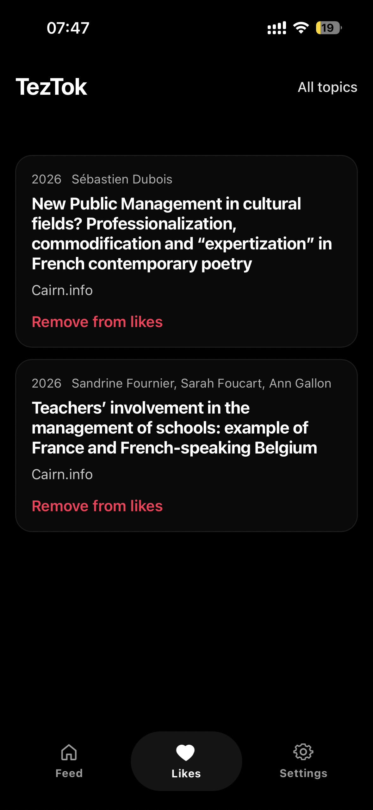

Academic Research,
Built for Browsing
A mobile-first interface for exploring academic theses and papers through short-form interaction patterns — applying familiar scroll-based UX to lower the entry barrier to research discovery.
